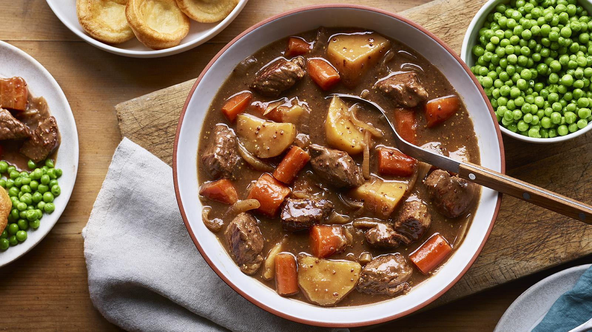

Beef stew

A completed beef stew ready to serve
This simple stew has a gravy-like sauce that benefits from browning the beef first, but you can also just throw everything in the slow cooker pot and it will still taste great. The Yorkshire puddings are included in the budget but are optional as they need to be cooked in an oven or air fryer, albeit only briefly.
This recipe is part of a budget slow cooker meal plan for four. In March 2023, it was costed at an average total of £6.70 when checking prices at four UK supermarkets. This recipe is designed to be made in conjunction with a low-cost store cupboard.
Ingredients
- 2 tsp vegetable, sunflower or rapeseed oil
- 400-500g beef skirt, brazing steaks or diced beef, chopped into 4cm chunks
- 1 onion, sliced
- 4 tbsp gravy granules
- 1 beef stock cube, crumbled
- 350g carrots, peeled and cut into 2-3cm batons
- 600g potatoes, peeled and cut into 4-5cm chunks
- 12 frozen yorkshire puddings (optional)
- 400g frozen peas
- salt and freshly ground black pepper
Steps
- Heat 1 teaspoon oil in a heavy-based frying pan. Divide the beef into two batches and add the first batch to the pan. Turn the beef to sear and color on all sides to a rich, dark brown. Transfer the browned chunks straight to the slow cooker pot. Repeat with the remaining oil and beef.
- Add the onion, gravy granules, mustard and stock cube to the pot and pour in 550ml/1 pint water. Give everything a quick stir, then add the carrots and potatoes. Cover with the lid and cook for 7 hours on low. Stir once during cooking, if you are at home, to rotate the meaty chunks sitting on the top.
- Meanwhile, cook the Yorkshire puddings (if using) according to packet instructions or in an air fryer at 190C for 4 minutes. Steam, microwave or boil the peas for 3–4 minutes until cooked.
- Season the stew with salt and pepper. Ladle portions of the stew onto plates and top with the Yorkshire puddings. Serve the green peas alongside.